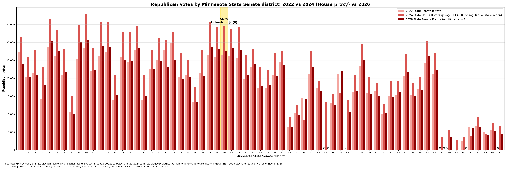

Statewide Republican votes: 2022 Senate 1,180,254 · 2024 State House (proxy) 1,530,797 · 2026 Senate (unofficial) 1,218,680

| District | 2022 | 2024 House proxy | 2026 | Change vs 2022 | Change vs 2024 | Notes |
|---|---|---|---|---|---|---|
| 1 | 27,320 | 31,359 | 24,012 | -3,308 | -7,347 | |
| 2 | 20,397 | 25,890 | 20,443 | 46 | -5,447 | |
| 3 | 21,349 | 27,923 | 20,866 | -483 | -7,057 | |
| 4 | 14,202 | 23,095 | 18,107 | 3,905 | -4,988 | |
| 5 | 28,731 | 36,459 | 30,380 | 1,649 | -6,079 | |
| 6 | 26,218 | 33,509 | 27,503 | 1,285 | -6,006 | |
| 7 | 20,797 | 28,203 | 21,773 | 976 | -6,430 | |
| 8 | 10,481 | 14,916 | 9,951 | -530 | -4,965 | |
| 9 | 25,372 | 34,953 | 30,091 | 4,719 | -4,862 | |
| 10 | 28,395 | 37,916 | 30,655 | 2,260 | -7,261 | |
| 11 | 22,111 | 28,299 | 22,240 | 129 | -6,059 | |
| 12 | 26,178 | 35,681 | 28,957 | 2,779 | -6,724 | |
| 13 | 27,295 | 35,682 | 28,815 | 1,520 | -6,867 | |
| 14 | 13,969 | 20,781 | 15,448 | 1,479 | -5,333 | |
| 15 | 25,780 | 32,925 | 25,174 | -606 | -7,751 | |
| 16 | 24,596 | 32,886 | 24,919 | 323 | -7,967 | |
| 17 | 27,810 | 34,477 | 28,402 | 592 | -6,075 | |
| 18 | 13,944 | 20,932 | 14,992 | 1,048 | -5,940 | |
| 19 | 22,450 | 27,986 | 22,607 | 157 | -5,379 | |
| 20 | 25,129 | 31,187 | 24,874 | -255 | -6,313 | |
| 21 | 27,829 | 30,652 | 23,002 | -4,827 | -7,650 | |
| 22 | 29,799 | 32,752 | 25,169 | -4,630 | -7,583 | |
| 23 | 20,273 | 27,019 | 19,686 | -587 | -7,333 | |
| 24 | 20,991 | 25,030 | 20,403 | -588 | -4,627 | |
| 25 | 13,251 | 17,444 | 13,418 | 167 | -4,026 | |
| 26 | 21,444 | 27,954 | 20,629 | -815 | -7,325 | |
| 27 | 26,479 | 35,826 | 28,596 | 2,117 | -7,230 | |
| 28 | 26,012 | 34,318 | 28,084 | 2,072 | -6,234 | |
| 29 | 26,505 | 34,529 | 27,444 | 939 | -7,085 | |
| 30 | 26,146 | 33,838 | 28,534 | 2,388 | -5,304 | |
| 31 | 25,705 | 34,188 | 27,808 | 2,103 | -6,380 | |
| 32 | 19,684 | 26,436 | 20,978 | 1,294 | -5,458 | |
| 33 | 23,091 | 28,175 | 23,977 | 886 | -4,198 | |
| 34 | 17,181 | 23,211 | 17,704 | 523 | -5,507 | |
| 35 | 17,300 | 22,230 | 18,248 | 948 | -3,982 | |
| 36 | 20,838 | 27,150 | 20,698 | -140 | -6,452 | |
| 37 | 24,463 | 27,658 | 23,667 | -796 | -3,991 | |
| 38 | 6,337 | 9,203 | 6,511 | 174 | -2,692 | |
| 39 | 10,327 | 12,624 | 9,757 | -570 | -2,867 | |
| 40 | 14,371 | 8,460 | 14,092 | -279 | 5,632 | 2024 no R in 40A |
| 41 | 21,215 | 27,696 | 23,184 | 1,969 | -4,512 | |
| 42 | 17,395 | 19,374 | 16,343 | -1,052 | -3,031 | |
| 43 | — | 13,231 | — | 0 | -13,231 | 2022 no R senate candidate; 2026 no R senate candidate |
| 44 | 12,984 | 15,509 | 12,603 | -381 | -2,906 | |
| 45 | 21,128 | 15,897 | 22,059 | 931 | 6,162 | 2024 no R in 45B |
| 46 | — | 14,031 | 10,522 | 10,522 | -3,509 | 2022 no R senate candidate |
| 47 | 16,111 | 21,010 | 16,330 | 219 | -4,680 | |
| 48 | 23,306 | 29,546 | 25,122 | 1,816 | -4,424 | |
| 49 | 15,998 | 20,480 | 15,528 | -470 | -4,952 | |
| 50 | 16,457 | 18,757 | 15,185 | -1,272 | -3,572 | |
| 51 | 10,049 | 12,906 | 10,220 | 171 | -2,686 | |
| 52 | 15,068 | 19,124 | 14,837 | -231 | -4,287 | |
| 53 | 15,373 | 19,228 | 16,219 | 846 | -3,009 | |
| 54 | 20,632 | 26,772 | 21,848 | 1,216 | -4,924 | |
| 55 | 15,316 | 18,544 | 14,910 | -406 | -3,634 | |
| 56 | 17,007 | 20,262 | 16,709 | -298 | -3,553 | |
| 57 | 24,258 | 30,260 | 26,262 | 2,004 | -3,998 | |
| 58 | 21,125 | 26,953 | 22,226 | 1,101 | -4,727 | |
| 59 | — | 3,549 | — | 0 | -3,549 | 2022 no R senate candidate; 2024 no R in 59A; 2026 no R senate candidate |
| 60 | — | 5,576 | 3,550 | 3,550 | -2,026 | 2022 no R senate candidate |
| 61 | — | 2,861 | — | 0 | -2,861 | 2022 no R senate candidate; 2024 no R in 61A; 2026 no R senate candidate |
| 62 | 2,528 | 3,527 | — | -2,528 | -3,527 | 2026 no R senate candidate |
| 63 | 6,449 | 3,878 | 6,023 | -426 | 2,145 | 2024 no R in 63A |
| 64 | 6,823 | 9,232 | 6,339 | -484 | -2,893 | |
| 65 | 4,960 | 4,572 | 4,303 | -657 | -269 | 2024 no R in 65A |
| 66 | 5,522 | 7,550 | 5,342 | -180 | -2,208 | |
| 67 | — | 6,716 | 4,402 | 4,402 | -2,314 | 2022 no R senate candidate |
Source: Minnesota Secretary of State. 2024 had no regular Senate elections, so it sums Republican votes in each district's two State House races. 2026 is unofficial. All years use 2022 district boundaries. Blank cells mean no Republican candidate.